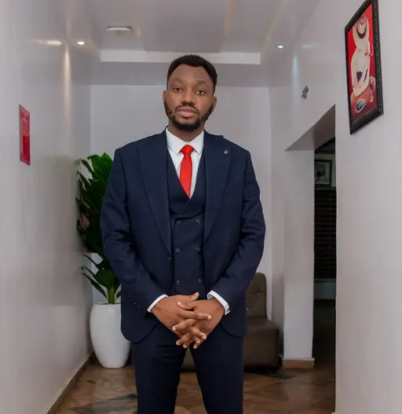

Sunday Victor Okoromi | WDD 130
Hello, my name is Victor, and I am a BYU Pathway student studying software development.
I am from Lagos, Nigeria and I will like to meet new friends to share knowledge and collaborate with
Hello, my name is Victor, and I am a BYU Pathway student studying software development.
I am from Lagos, Nigeria and I will like to meet new friends to share knowledge and collaborate with